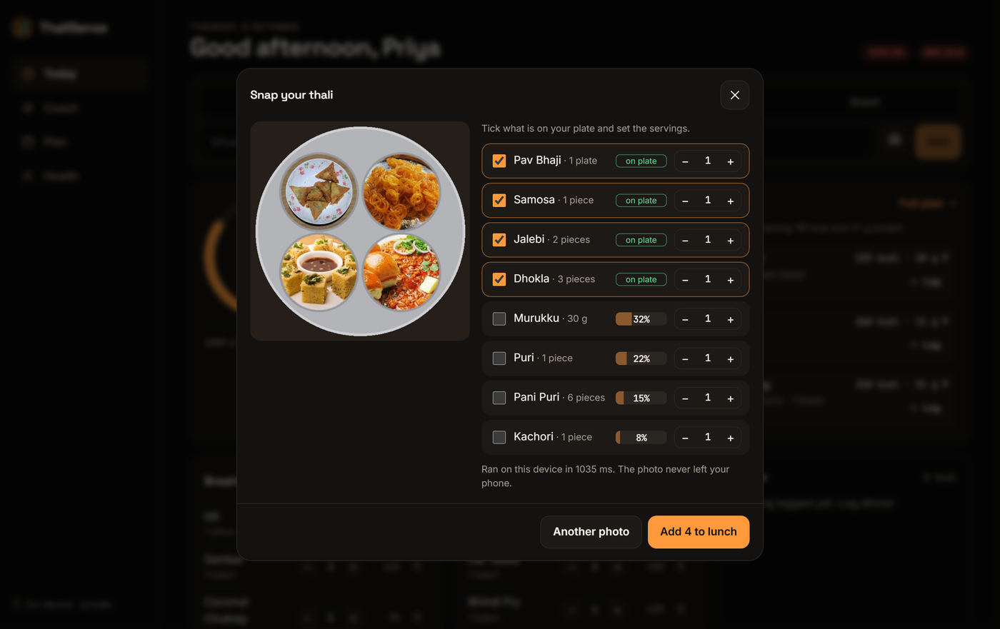
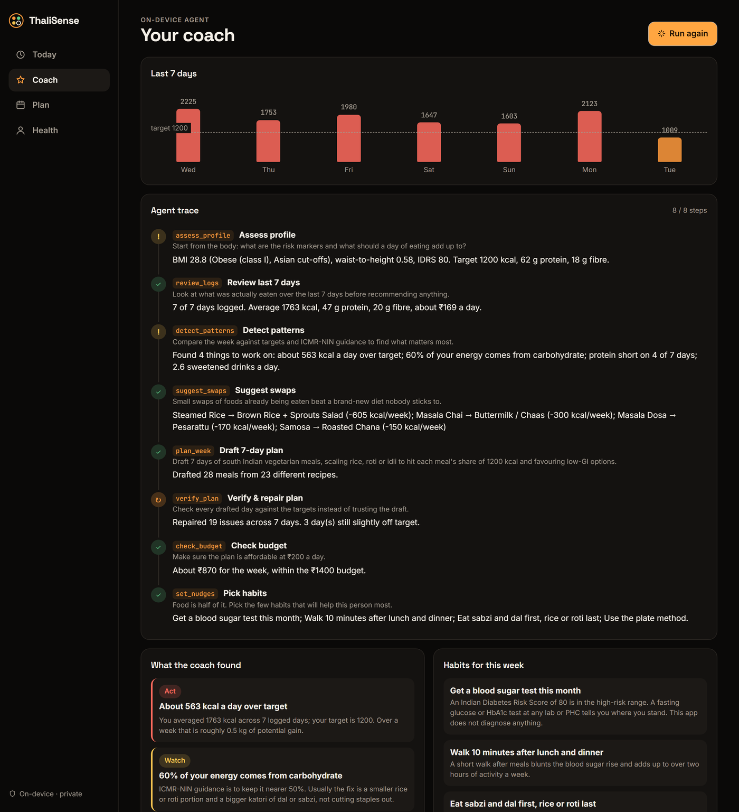
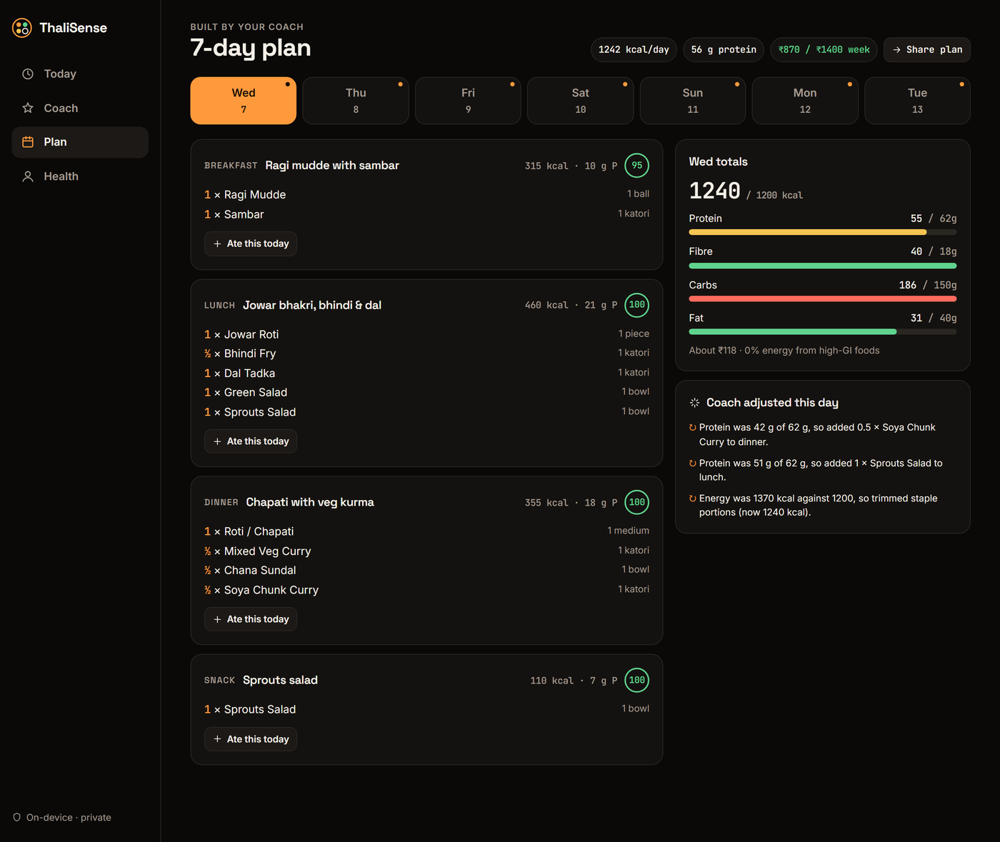

An on-device AI nutrition and metabolic-health coach built for Indian meals.
Indians living with diabetes
more with prediabetes, mostly undiagnosed
is where overweight starts for Asian Indians, not the global 25
25 to 55, desk jobs, family history of diabetes, a growing waistline. They want to act early without giving up home food.
Told by a doctor to “watch your diet”, with no idea what that means for idli, roti or biryani.
The person planning meals for the whole family, on a budget, in a regional cuisine.
ASHA and community health workers screening villages with the Indian Diabetes Risk Score, offline on one phone.
Corporate wellness and health-insurance programmes that need a private, low-cost prevention tool.
Type it your way (“rendu dosai”, “2 roti, dal”) or snap a photo. On-device AI recognises 108 Indian dishes.
Indian Diabetes Risk Score, Asian BMI cut-offs, waist-to-height ratio and personal calorie and protein targets.
An agent finds what matters most and swaps foods you already eat, showing the weekly impact of each swap.
A self-checked 7-day regional meal plan for your diet and ₹/day budget. Log any meal with one tap.
Free. No sign-up. Nothing leaves your phone: the AI runs inside the browser.

Snap a whole thali: the AI scans the plate and ticks every dish it finds, on the device.

Coach: an 8-step agent trace you can follow, plus insights and swaps.

Plan: 7 regional days within budget, with notes on what the coach adjusted.
108 dishes with IFCT-2017-based nutrition, GI band and rupee cost; Hindi, Tamil and regional names.
Quantities, “do / rendu / aadha”, plurals, typos and compound dishes like curd rice.
Fine-tuned on-device vision model: 87.8% top-1, 95% top-3 on 1,694 photos, and it reads whole thalis.
MDRF Indian Diabetes Risk Score, Asian BMI, waist-to-height ratio, with a prompt to get tested if at high risk.
Shows each step it takes, swaps foods with measured weekly impact, and verifies and repairs its own plan.
No account and no server; installs like an app, works offline, and costs nothing to run per user.
inputTyped meal / photoparser · MobileCLIP-S2Dish recognitionlocalStorageMeal logcoach agent8 tool stepsoutputInsights · swaps · planTransformers.js on ONNX Runtime Web, WebGPU or 4-thread WASM, in a Web Worker. One vector per dish from descriptive prompts, few-shot adapted on 2,354 labelled photos. The 72 MB encoder downloads once; a second pass scans five plate regions to find every dish on a thali.
A tool-based planner: assess → review → detect → swap → plan → verify → budget → habits. It scores 60 real meal templates on protein, fibre, glycaemic load, cost and region, scales the staples, then checks every day against the targets and fixes the misses.
React 19 · TypeScript · Vite · Transformers.js · ONNX Runtime Web · Vitest · Playwright + axe · GitHub Actions · Vercel · PWA · no backend, no paid APIs
| Model, on 1,694 test photos | Size | Top-1 | Top-3 |
|---|---|---|---|
| CLIP ViT-B/32 (our v1) | 89 MB | 71.5% | 86.8% |
| CLIP ViT-B/16 | 87 MB | 73.6% | 87.9% |
| MobileCLIP-S2 | 72 MB | 81.5% | 92.9% |
| MobileCLIP-S2, few-shot adapted | 72 MB | 87.8% | 95.0% |
of dishes found on 200 four-dish test thalis, by adding a scan of five plate regions to the whole-photo guess.
Test photos from three public Indian-food datasets, never used for training or tuning. Full model card: github.com/andringodson/ThaliSense/blob/main/docs/vision.md
Everything shown was built during the hackathon window. No pre-built project code was reused; open-source libraries (React, Transformers.js), the public MobileCLIP model and public datasets are credited.
| Typed logging, 108 dishes | Live |
| On-device photo and whole-thali recognition | Live |
| Risk scores and targets | Live |
| Coach agent, 7-day plan, plate scores, progress | Live |
| Plate segmentation, voice in Indian languages | Next |
Indians with diabetes or prediabetes who would benefit from diet guidance today (ICMR-INDIAB 2023).
marginal cost per user: compute runs on the user's own phone, so the app scales without server bills.
regional cuisines and 3 diet types from day one, so it fits most Indian households.
Daily logging, weekly coaching and a meal plan for the family.
Patients who score high on IDRS are referred for HbA1c testing; dietitians get a coaching companion app.
ASHA workers run IDRS screening offline as part of national NCD prevention efforts.
Logging, risk scores, the coach and plans stay free forever. Because there are no server costs, free is sustainable.
Employers and health insurers pay per member per year for a white-label version with opt-in, anonymised progress reports.
Users who score high on IDRS can book a fasting-glucose or HbA1c test with partner labs; we earn a referral fee.
A subscription dashboard so dietitians and clinics can give clients ThaliSense plans that they review and adjust.
| Typical calorie app | Paid diet coaching | ThaliSense | |
|---|---|---|---|
| Understands Indian dishes & Hinglish | Partly | Yes | Yes, 108 dishes, regional names |
| Indian risk science (IDRS, BMI 23) | No | Sometimes | Built in |
| Explains its reasoning | No | Human coach | Visible agent trace |
| Data stays on your device | No, cloud | No, cloud | Yes, nothing uploaded |
| Cost to the user | Freemium | ₹ thousands a month | Free |
| Budget-aware regional plans | No | Manual | Automatic, self-checked |
kcal a week saved by the swaps the coach finds in the demo week, about 0.7 kg of fat a month, with more protein and fibre.
IDRS score triggers a clear “get tested” prompt, catching undiagnosed diabetes earlier.
bytes of health data uploaded. Privacy builds trust, especially for women and older users.
Open the link on any phone and press Try with a demo week.
Live app
Source code